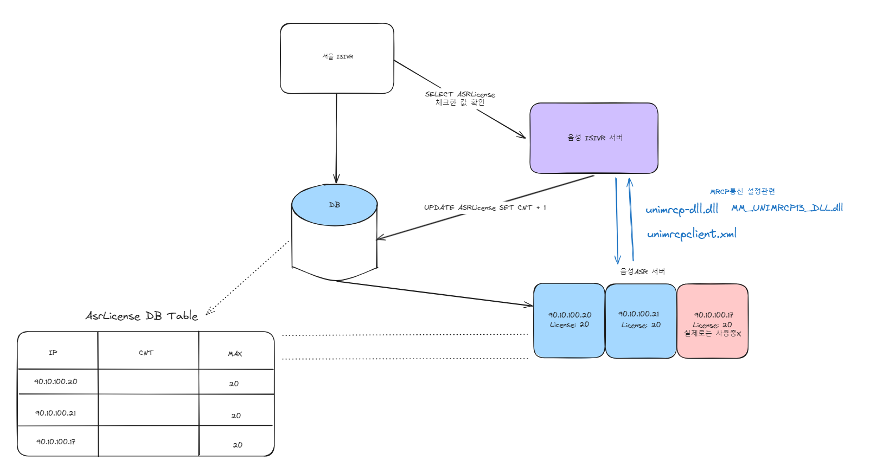

Jaemin's Blog
-
1. MRCP란 무엇인가?
-
2. MRCP(Media Resource Control Protocol)는 음성인식과 음성 합성 등 음성 처리 리소스를 통제하기 위한 표준 프로토콜
MRCP는 클라이언트(IVR)와 서버(ASR/TTS) 사이의 통신을 관리하며, 사용자의 음성 명령을 인식하거나 텍스트를 음성으로 변환하는 등 다양한 서비스를 제공
-
4. 통합의 목적 및 이점
MRCP 통합을 통해, 기업은 다양한 벤더의 음성 인식, 음성 합성 서버와 쉽게 연결할 수 있어 시스템 유연성과 확장성을 높임
-
MRCP는 음성인식이나 음성 합성 서버와 통신하기 위한 미디어 리소스 제어 프로토콜
SIP는 멀티미디어 세션을 설정, 변경, 종료하는데 사용되는 신호 프로토콜
MRCP와 RTP의 역할 차이
- MRCP
제어(컨트롤) 프로토콜
음성 인식 혹은 음성 합성 서버에게 요청(Recognize 해줘, Speak 해줘)같은 명령/지시를 보내고, 서버가 처리 상태, 결과를 응답
- RTP
실제 오디어 데이터가 오가는 전송용 미디어 프로토콜
사용자의 목소리가 실식나으로 RTP 패킷에 담겨, 엔진(ASR/TTS 등)과 오고 가는 역할
동작원리
1. 사용자가 말을 시작
2. IVR이 SIP/MRCP를 통해 ASR 서버와 세션을 맺음
3. MRCP명령으로 "지금부터 인식 시작(Recognize)"을 지시함
4. 음성 데이터(실제 우리가 말하는 소리)는 별도의 RTP 스트림으로 서버로 전송됨
5. ASR 서버가 음성을 받아 인식하고, 그 결과(텍스트)를 MRCP 프로토콜 메세지로 다시 전달함
IVR → ASR 서버 :
MRCP: Recognize 해주세요!
IVR → ASR 서버 :
RTP: 실제로 사용자가 말하는 소리를 스트림 전송
ASR 서버 → IVR :
MRCP: 인식 결과 텍스트를 메시지로 반환
※ 중요 Point
RTP는 오디오 데이터(음성 실체)만 실어나릅니다.
MRCP는 명령과 상태, 결과 등 제어 목적으로만 사용됩니다.
두 프로토콜이 서로의 목적을 분리해서 동작하지만, 전체 음성 서비스가 유기적으로 작동하게 도와줍니다.
